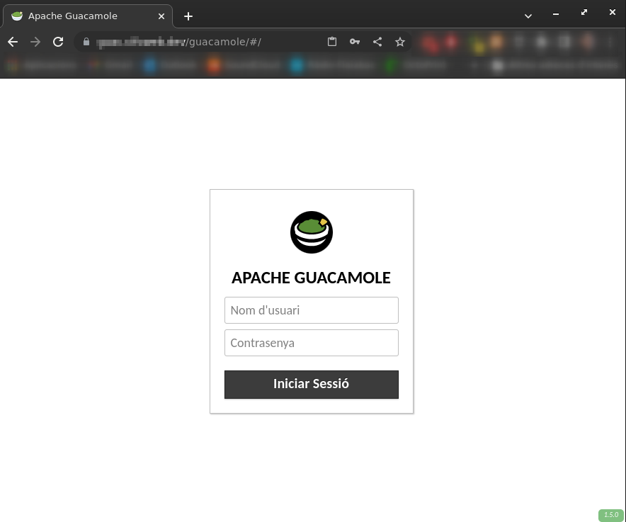

08 - Remote access - Guacamole

Introduction
Apache Guacamole is a clientless remote desktop gateway. It supports standard protocols like VNC, RDP, and SSH.
We call it clientless because no plugins or client software are required.
Thanks to HTML5, once Guacamole is installed on a server, all you need to access your desktops is a web browser.
Getting started
We’ll be using an already tested docker compose template from user boschkundendiest, that automates all the process of launching required extra docker containers such as guacd, postgesql, and several init steps (SSL certificates creation, optional nginx, etc…):
Install Docker and Docker Compose
We’ll be using a dedicated Alpine LXC to host Guacamole. Start by installing Docker as explained in this post. The difference here is that the package manager is apk instead of apt, so the commands are:
Install additional dependencies
Apart from Docker and Docker Compose, we need the following dependencies: - Git to clone boschkundendiest repository - OpenSSL to generate self-signed certificates - Vim to edit some files
Clone repository
Modify the docker-compose.yml file
By default, this Docker Compose file does the following:
- Creates a network
guacnetwork_composewith thebridgedriver - Creates a service
guacd_composefromguacamole/guacdconnected toguacnetwork_compose - Creates a service
postgres_guacamole_composefrompostgresconnected toguacnetwork_compose - Creates a service
nginx_guacamole_composefromnginxconnected toguacnetwork_compose
We need to modify two things:
- First of all, replace variables
POSTGRES_USERandPOSTGRES_PASSWORDwith environment variables that be stored in the secured.envfile at the same level as thedocker-compose.ymlfile:
Docker compose env variables
- Second, as we’ll be using Cloudflare Zero-Trust tunnels for secure connections, we won’t be needing the
nginxservice, so we need to correctly map the Guacamole service port to a valid host port and disable allnginxconfiguration:
Docker compose nginx-related changes
services:
guacamole:
# [...]
ports:
## enable next line if not using nginx
- 8080:8080/tcp # Guacamole is on "localhost:8080/guacamole", not "localhost:8080/".
## enable next line when using nginx
# - 8080/tcp
# [...]
# Comment anything nginx-related, we don't need it
########### optional ##############
# # nginx
# nginx:
# container_name: nginx_guacamole_compose
# restart: always
# image: nginx
# volumes:
# - ./nginx/templates:/etc/nginx/templates:ro
# - ./nginx/ssl/self.cert:/etc/nginx/ssl/self.cert:ro
# - ./nginx/ssl/self-ssl.key:/etc/nginx/ssl/self-ssl.key:ro
# ports:
# - 8443:443
# links:
# - guacamole
# networks:
# guacnetwork_compose:
####################################################################################Launch the preparation script from the repository
At the root of the repository, make sure that ./prepare.sh has execution permissions and launch it as root or sudo user if you’re using another distribution with an non-privileged user:
This will create the required paths for the docker volumes, initialize the PostgreSQL database, and SSL certificates for nginx (even though we won’t be using them).
Once done, we can deploy the docker-compose.yml file:
If everything is OK, guacamole web portal shall be available on <guacamole-server>:8080/guacamole:

Default username and password are guacadmin both. Make sure to login and change the password first thing!
Alternative, it’s even more secure to create another user with all permissions and delete the guacadmin one
Configuring Guacamole
Create groups of connections
Create SSH connections
Go to the admin panel, select Connections and create a new one. A simple SSH connection only needs these parameters:
- Name: the connection name. It shall describe the remote server
- Location: select a group for this connection
- Protocol: select SSH
On Parameters, configure the following fields:
- Network:
- Host name: either the IP or the FQDN of the server
- Port: 22 by default, change it if it is different
- Authentication:
- User name: the user name to connect as
- Password: the password, if password authentication is enabled in the remote server
- Private key: the
opensslprivate key of the shared public key with the server. It must be
Save the connection and go back to the main menu. The connection should be available from there.